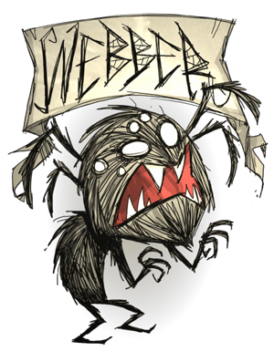

Webber
His sanity may be below average, but it makes up for his perks. He starts out with a spider egg (Which he can craft and give to other players.) and he can get spiders to do all his combat plus he can eat monster meat without complications finally he can grow a beard of silk. Since of these perks webber can do anything in the game. (Besides who needs pigs and bunny men anyway.)